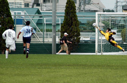
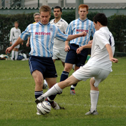
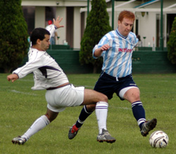

|
YC&AC, Sun 15th Oct. A thoroughly entertaining game of football was fought out on the heights of YCAC’s ground despite the perennial wind, which often dictates the areas of action at this venue. The grounds man can take great credit having watered the pitch in the morning and for having left the grass a decent length; the two combined to allow a level of controlled football, which isn’t always associated with this ground
YCAC went into the game minus several first team players but started with the wind at their backs. The first twenty minutes saw a game with a tight, highly contested midfield and no shots to test either keeper. The only moment of note was a superbly executed free kick from Andres which found Toby behind the wall but his header lacked the killer touch. To Sala’s credit, the wind didn’t affect territorial advantage and Guido 'The Terminator's towering strength at the back nullified the high ball. The work rate of both teams was exemplary, although Shige and Andres gradually won the ascendancy in the middle of the park. Sala’s continual rotation of their strike force irked a few of the hosts but their forwards’ freshness paid more and more dividends as the game went on.
On the thirty-minute mark, a move started on the right, with Brookey’s flick to Andres and then on to Brian, who picked it up on the edge of the area, beat his marker and toe- poked it over the despairing keeper, who had lost his bearings on the middle of his goal.
Quite naturally, this sparked YCAC into renewed effort and what followed shortly after was a move of professional class. YCAC broke down the right, a sweeping move to almost the byline and a perfectly weighted cross onto which an unchallenged forward rose high, but not quite high enough, to power a header just over the bar.
Half-time, 1-0 Sala against the wind.
The second half was also keenly contested and equally highlighted by moments of play well above those expected in such a league: Sala can claim most of those. From Sala, raiseth Toby. For a 10-minute spell in the second half, the Canadian, who cannot afford a haircut, turned the game on end and won plaudits from all who watched. Sid came out to take a cross, hoofed the ball upfield, Toby ran onto it in the YCAC’s area and seemed to take an age to move it from right thigh to a curling left foot shot into the top corner. Masterly, and his subsequent confidence showed it. Three minutes later he produced another fine effort, which the keeper acrobatically put round the post for a corner. Another punt from Sid and the deftest of back-heels from Toby allowed Brian to drill inches wide in what could have been goal of the season. Lenny was, by now, causing all sorts of problems on the left, Shige was in total control of the midfield and it looked as if only time would tell before another goal would be Sala’s. That time wasn’t long in coming as a ball came in from the right, Brian turned on a double-decker bus and blasted it into the lower right–hand corner.
But never underestimate YCAC. 3-0 down, and Sala now playing a five–man defense, they didn’t give up. In fact, they then produced their most dominant period of play. Andres 'The Colombian Enforcer,' was rightly booked for trying to thwart one attack under his own terms, and YCAC were first to three or four balls into Sala’s box, only to see their efforts miss the woodwork by the narrowest of margins. Their efforts finally paid dividends twelve minutes from time with a thunderous drive into the top right-hand corner giving Sid no chance.
YCAC continued to press and went close a couple more times but couldn’t hit the target. The final score, 3-1 was a pretty fair reflection on the day’s play.
Man-of-the-match was clearly Toby for elevating himself to a different level for a ten-minute period. And three points to the grounds man for providing a pitch which allowed such football to be played on.
Report by Andy Cross
|